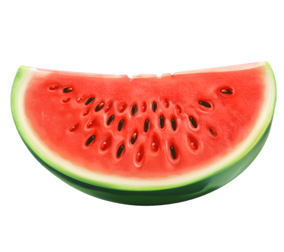

JESTES ARBUZEM
 Arbuz to duzy owoc, wyglada bardzo efektownie, jednakze tak naprawde jest pusty, bo 90% arbuza to woda. Jesli jestes arbuzem, to istnieje prawdopodobienstwo, ze jestes osoba puszysta. Prawdopodobnie charakteryzuje sie bardzo wysoka pewnosc siebie i wydaje ci sie, ze wiesz juz o swiecie wszystko. Jednak nie zalamuj sie, nie tak zle byc arbuzem, ma to swoje plusy - wypelniasz soba przestrzen spoleczna i wszedzie cie pelno. Jednak mozliwe, ze nie jestes zbyt lubiana osoba i wcale sie nie dziwie :)